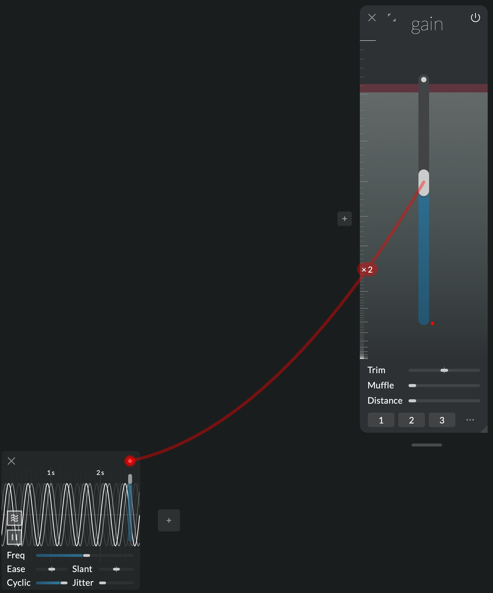
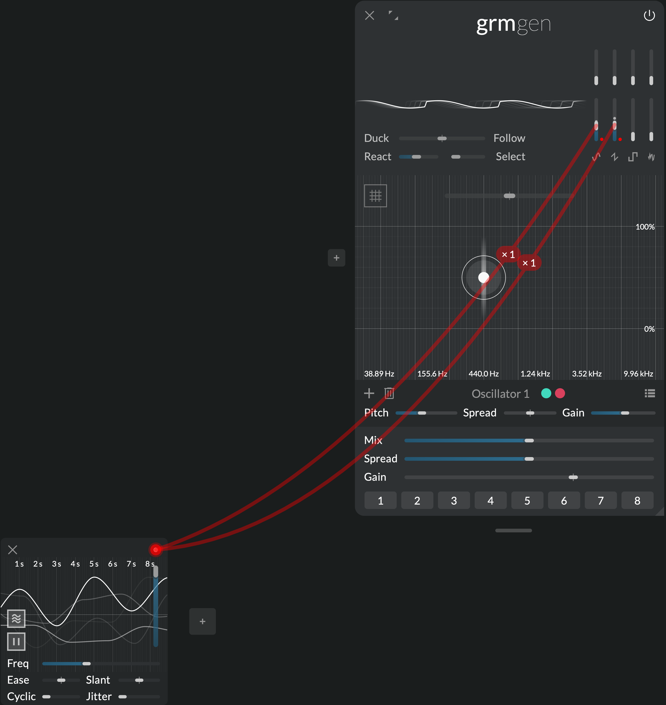
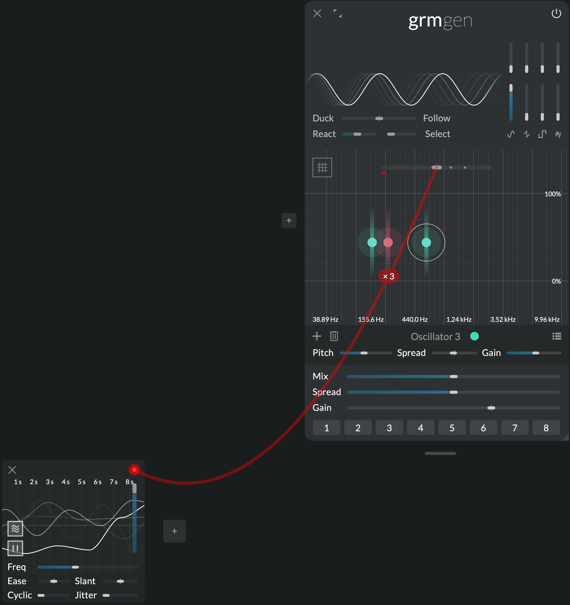
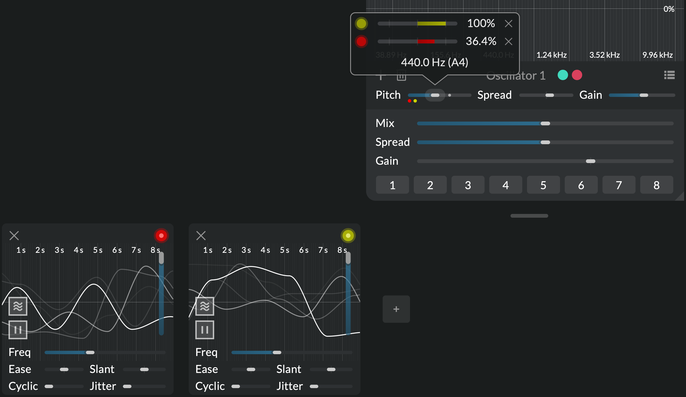
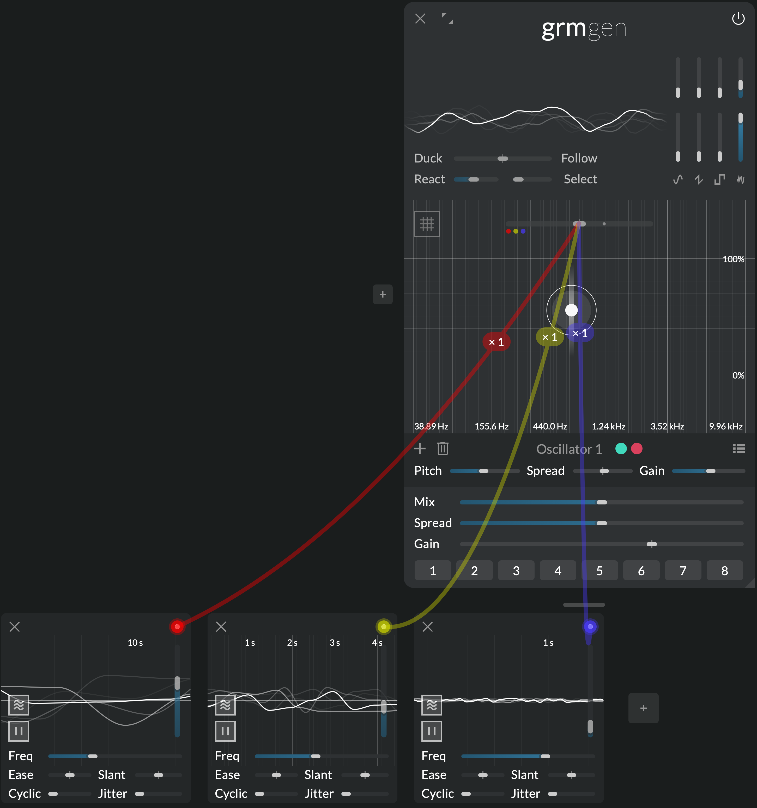
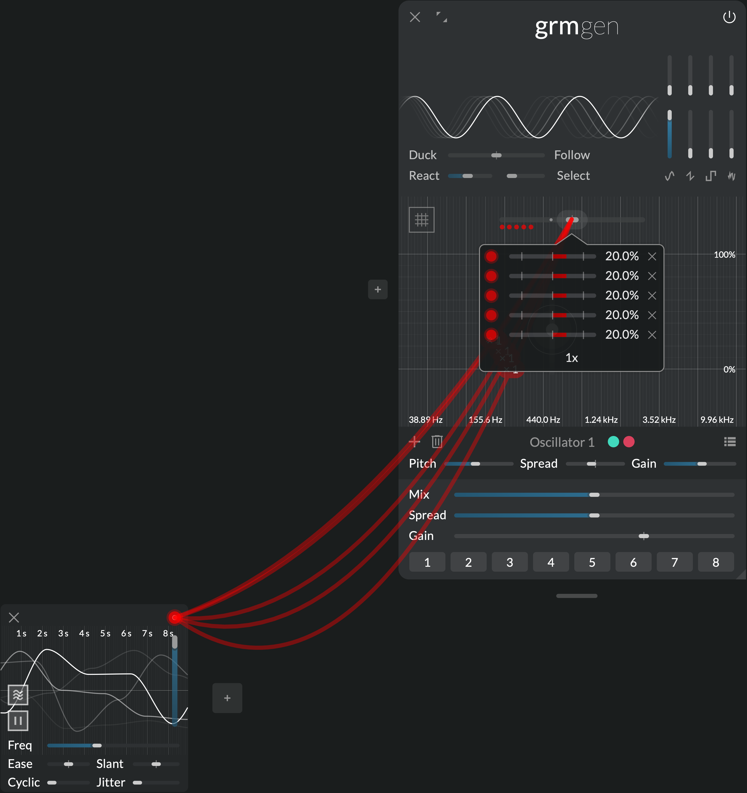

The modulation system
A new modulation paradigm
In Atelier just like on modern modular synthesizers, all parameters (sliders, cursors, buttons etc.) can be modulated. But Atelier's polyadic modulation system goes far further than its analog parent, offering a new paradigm to interact with your modules. It is the key to constructing living, evolving patches, provoke surprises and program complex interactions.
Animate a whole family of parameters in one click, let complex random movements guide your explorations (Agitation), construct tailor-made macro-controls for live interaction (Control), or trigger advanced envelopes with customizable contours (Peak)... If the modules of Atelier are its sound-processing heart, the modulation system is certainly its brain.
Features
- Polyadic: each destination is its own independent modulation engine
- Accumulatable: scale and sum as many modulations to a single parameter as wanted
- Composable: all modulators parameters are themselves modulatable, polyadically
Getting started
Modulation is a classic technique from analog synthesis (also known as CV): instead of moving a parameter manually, a modulator generates a signal that moves it automatically. You may for instance modulate the gain of some audio input with a sine LFO (low frequency oscillator) to get a tremolo effect.

Click the "+" button in the bottom row of the interface to instantiate a modulator (e.g. Agitation). Each modulator has a handle in the top right corner (colored round); drag a wire from the handle to the parameter of your choice to make a new connection.
Once a connection is made, the parameter is modulated relatively to its nominal value (the current position of the slider, the state of the button etc.). Its actual value is displayed as a small grey dot on sliders and buttons. Hovering over a modulated parameter shows a popup where one can scale the modulation, or remove a connection.
Hovering over a modulator's handle displays its outgoing wires. Hold "w" or press the "Show all connected wires" button in the status bar to see all wires.
Note
You can give each modulator instance a name: click on the empty space between the "close" button and the colored handle. This helps remembering who does what.
Polyadic modulation
In Atelier, all modulations are polyadic: if a modulator is connected to several destination parameters, each destination gets its own independent modulation engine. Each of these modulations, while sharing the modulator's parameters (speed, amplitude etc.), can have its own internal phase, random state etc.
Try connecting the same modulator, say, an Agitation, to two different parameters: the two parameters will be agitated differently. Changing, say, the agitation's frequency will act on the two parameters, but the random trajectories of each modulations will stay independent.

This is in stark contrast with classic modulation in analog synthesis: if one was to patch a single source of modulation (e.g. an LFO) into several destinations (by multing its output), each destination would receive the exact same LFO signal. This new paradigm opens up a wealth of workflow improvements and discovery avenues that would be difficult to imagine traditionally.
Parameter instances
Moreover, when a single parameter actually controls several things at once, each of these things is modulated independently: parameters can have several instances. For instance, the Ratio slider in Gen applies a ratio to all oscillators' frequencies; if there are three oscillators enabled, Ratio has three instances: agitating Ratio will agitate the three actual ratios independently.

The number of instances of a modulated parameter is shown on its wire (e.g. "x3"), and its actual values are displayed as grey dots on the button/slider.
Accumulating modulations
A parameter can receive several connections from several modulator (and even from the same modulator). Just drag several wires to the same parameter; modulations are summed together, and the parameter's popup displays the list of connections. Each connection has its own range (-200% to 200%).

Note
The 100% range of all modulators is able to span the entire range of a parameter, either bipolarly (plus or minus half the range), or unipolarly (0 to full range). If at some point the sum of the nominal parameter value and all its modulations exceed the limit of the parameter, it is clamped to the limit.
Note
On/off buttons (like Play's play/pause buttons) can also be modulated, but they differ from continuous parameters: if the sum of their modulation is positive, their actual value is the same as their nominal value (the state of the button); if it is negative, it is inverted.
Modulating the modulators
All modulators parameters are themselves modulatable: just drag a wire from one modulator to another modulator's parameter. These connections themselves are also polyadic: A modulator parameter has as many instances as there are connections going out of it. In other words, if a modulator's parameter is in turn modulated, each of its destination will spawn an individually-modulated modulator!

For instance, if three oscillator in Gen have their pitch modulated by the same agitation, and another agitation modulates its frequency, then each of the three pitch modulations will see its frequency agitated independently.
Note
Because of their polyadic nature, modulation feedback loops do not make sense (they would require infinitely many parameter instances). The signal path of modulations must therefore be loop-free; Atelier will warn you whenever your patch involves a feedback loop.
Tips & tricks
Brownian agitation

Make 3 Agitations, and set them up with increasing frequencies (say, 0.1 Hz, 1 Hz and 10 Hz) and decreasing amplitudes (say, 60%, 30% and 5%). Now modulate a parameter with these three; the three agitations are summed together and result in a multi-scale agitation: large, smooth movements are combined with smaller, faster one. Increasing the number of agitations involved, we get closer and closer to what is known in physics as brownian motion (see also Perlin noise).
Multiple connections

What happens if we connect a modulator, say an Agitation, to the same parameter multiple times, say 5 times? Each connection spawns an independent random oscillator, and they are all summed together. Let's reduce the amplitude to 20% (1/5th of 100%) so it does not risk clamping the parameter. The sum of all agitations is a random signal that has more chance to be found around 0 (close to the nominal parameter value), much like rolling 5 dices and summing the figures will get you a number likely close to 15 (5 * 6 / 2).
Got it? Now try to predict what will happen with a Peak set to 50% chance of triggering.